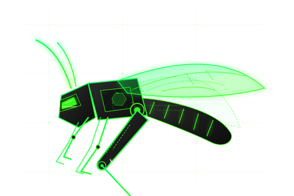

Grasshopper is a beginner-friendly vulnerable Linux virtual machine designed to help learners gain practical experience in ethical hacking, penetration testing, Linux administration, and cybersecurity fundamentals.

Grasshopper is an intentionally vulnerable Linux virtual machine built for educational purposes. It provides a realistic environment where learners can practice ethical hacking techniques and understand how common services, open ports, and system misconfigurations can be identified and exploited in a safe and controlled lab environment.
As the name suggests, Grasshopper is "easy to catch", making it an ideal first step for students, cybersecurity learners, and first-time CTF participants before diving into more complex boot-to-root challenges.
Navigate the filesystem, understand permissions, find files, and interact with the Linux command line environment.
Learn scanning strategies with Nmap, identifying open ports, and gathering details about active daemon versions.
Examine hints and configuration files to build logical chains of exploit payloads and decrypt stored information.
Discover weakness in legacy protocols and default configurations to gain unauthorized system entry.
Understand script execution, modify basic automated tasks, and leverage command hooks to scale privileges.
Practice handling various compressed formats (.tar, .zip, .gz, .7z) and carving out hidden files from logs.
Connect and control files remotely using SSH, Telnet, and FTP configurations safely in your sandbox.
Consolidate foundational pen testing strategies: information gathering, exploitation, and local privilege escalation.
A secure terminal environment containing weak password schemes or legacy key pairs. Test brute-force limits and key carving techniques.
An unencrypted legacy remote communication daemon. Learn how plaintext credential sniffing or command execution works in older networks.
Anonymous file logins or loose file permissions allowing students to browse system files, extract credentials, and upload web-shells.
Database daemon running with root credentials or exposed configurations. Learn SQL injection, database dump queries, and hashes cracking.
Web applications displaying hidden directories, outdated CMS portals, or custom login portals built to teach directory traversal.
Various obscure ports broadcasting custom backdoors or banners. Teaches the importance of broad scans and custom scripting connections.
Ideal for college or high school students looking for practical labs to supplement theoretical coursework. Learn real commands, not just slide slides.
Cybersecurity enthusiasts transitioning into offensive security. Gain the confidence needed for tools like Metasploit, Nmap, and Hydra.
Build the foundational flags-capturing knowledge. Learn how files are hidden, how hashes are compiled, and where standard clues are buried.
Minimal abstract challenges, clear breadcrumbs for learners.
Local sandbox VM keeping your host system protected.
Standard daemons (Apache, FTP, MySQL) matching real servers.
Hands-on commands on your Kali or Parrot OS setup.
Improves command line fluency, configuration files analysis.
Capture user and root flags to mark progress.
Move away from script-kiddie tools, master custom setups.
Easily importable OVA appliance, works on major hypervisors.
Get the compressed lab files from Google Drive
Extract the .7z archive containing the .ova file
Import VM appliance into VirtualBox or VMware
Power up, grab ports, and deploy your exploits
Download the machine, load it into your hypervisor, and start your cybersecurity learning journey today.
Download Grasshopper